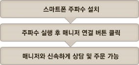

최신 금융공학 시스템과 투자 전문가가 추천하는 종목을 1차 SRS 검증, 2차 매니저와의 상담을 통해 투자 적중률을 높여 드리는 서비스입니다.
금융공학 시스템의 계량적 분석에 의한 종목추천 서비스, 한국경제TV, SBS, MBN, 팍스넷 등에서 활동중인 투자 전략 고수들과 함께하는 종목 추천 서비스입니다
| 퀸트 | |
|---|---|
| 소개 | - 금융공학 시스템의 계량적 분석에 종목추천 서비스 |
| 특징 |
|
| 가입조건 | - 가입시점 예탁자산 2,000만원 이상 |
| SAY | |
|---|---|
| 소개 | - 전문가가 장중 Live 방송을 통해 시황과 종목 상담 제공 |
| 특징 |
|
| 가입조건 | - 가입시점 예탁자산 2,000만원 이상 |
추천종목 여러개 받으셨다구요?
펀더멘탈과 모멘텀 분석을 통한 종목 검증 서비스인 SRS 종목검증을 통해 핵심종목만 골라 보세요!
투자매력도는 기업의 재무제표와 시장정보를 분석하여 점수화 하여 0에서 100 사이의 점수로 종목의 상태를 나타냅니다.
주가위치는 주가의 고평가, 저평가 등 차트의 위치를 파악하여, 주가가 장기적으로 어느 위치에 있는가를 바닥과 무릎, 허리, 어깨, 머리 순으로 표시하여 줍니다.
우량 종목 몇가지를 고르셨는데, 매수 타이밍이 고민이시죠? 매니저와 전화 상담을 통해 최적의 매수 타이밍을 포착하세요.

| 매니저 상담의 특징 |
|---|
|
| 주의사항 / 공인인증 주파수 매니저 가입 고객님이 온라인 매체에서 직접 주문할 경우 수수료는 0.15%이며 매니저연결을 통해 전화 주문을 실행할 경우 수수료는 0.5% 입니다 |